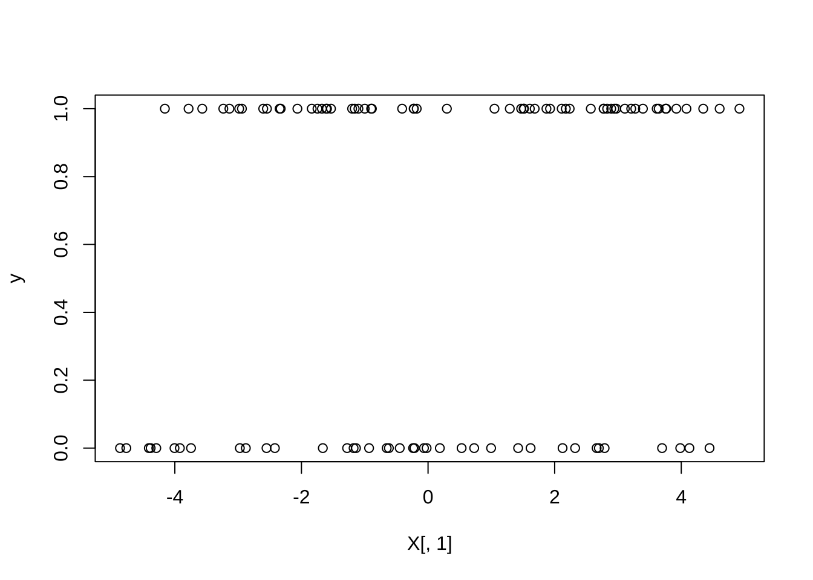
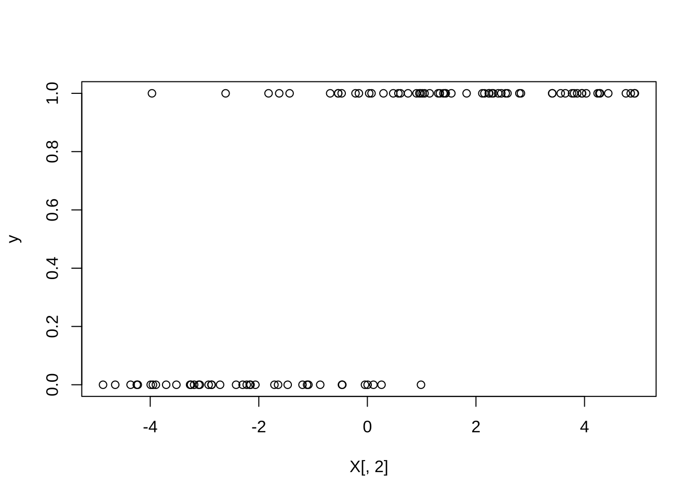
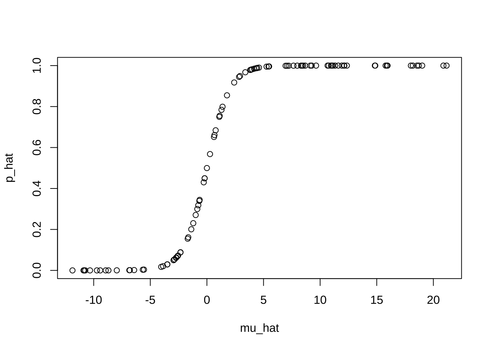
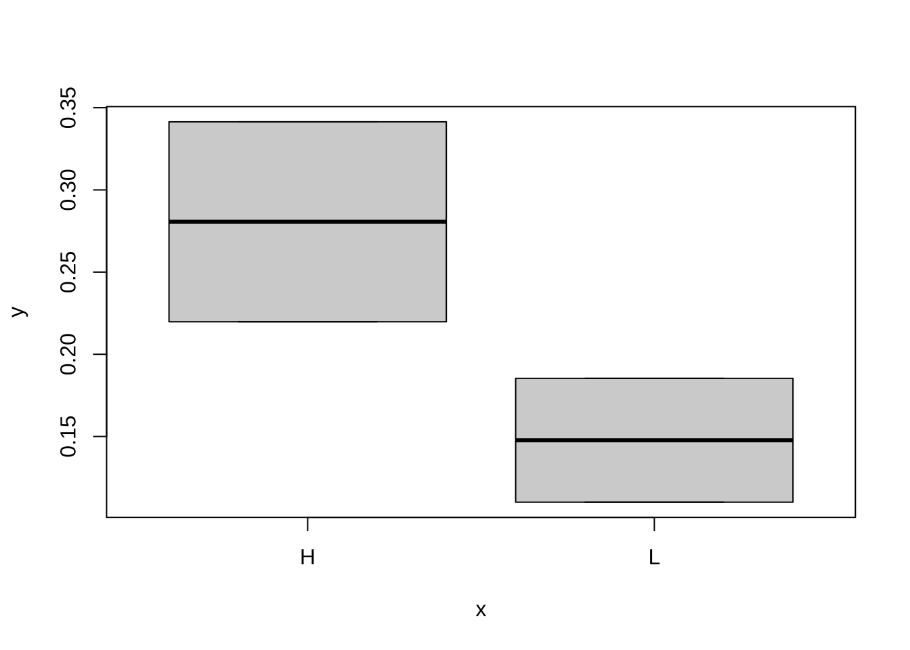
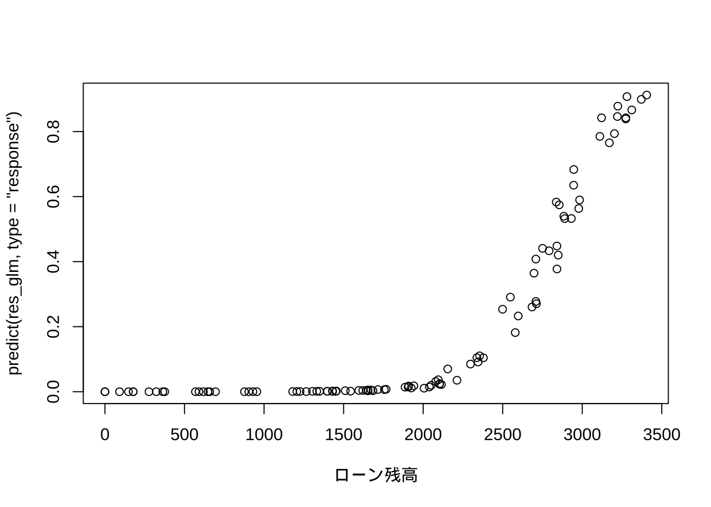
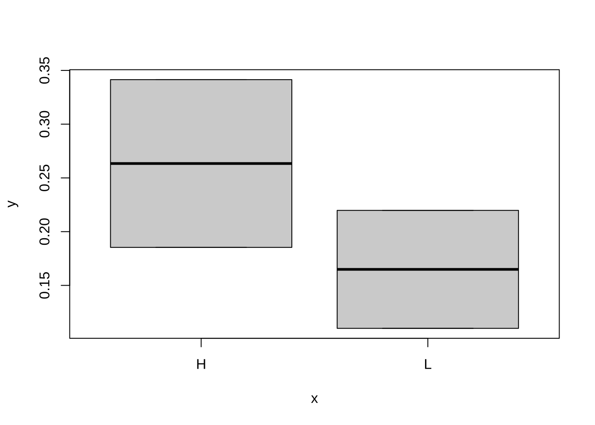

4 ロジット/ブロビット回帰分析
4.1 ロジット回帰分析の基本操作
ロジットモデル: シミュレーションデータ
- シミュレーションデータの生成
set.seed(1)
n <- 100
p <- 2
a <- 1.2
b <- c(0.5, 1.5)
X <- matrix(runif(n * p, -5, 5), ncol = p) # 予測変数 (X1, X2)
colnames(X) <- paste0("X", 1:p)
mu <- a + X %*% b # 線形予測子
pi <- exp(mu)/(1 + exp(mu)) # ロジスティック変換
y <- rbinom(n, 1, pi) # 発生頻度 (ランダム)
plot(X[, 1], y)

- ロジット回帰分析の実行
# ロジット回帰
res_glm <- glm(y ~ X, family = binomial)
summary(res_glm)
#>
#> Call:
#> glm(formula = y ~ X, family = binomial)
#>
#> Deviance Residuals:
#> Min 1Q Median 3Q Max
#> -1.79161 -0.08440 0.00084 0.09128 2.36307
#>
#> Coefficients:
#> Estimate Std. Error z value Pr(>|z|)
#> (Intercept) 2.5815 0.8647 2.985 0.002831 **
#> XX1 1.1494 0.3434 3.347 0.000818 ***
#> XX2 2.7630 0.7509 3.680 0.000233 ***
#> ---
#> Signif. codes: 0 '***' 0.001 '**' 0.01 '*' 0.05 '.' 0.1 ' ' 1
#>
#> (Dispersion parameter for binomial family taken to be 1)
#>
#> Null deviance: 133.750 on 99 degrees of freedom
#> Residual deviance: 34.478 on 97 degrees of freedom
#> AIC: 40.478
#>
#> Number of Fisher Scoring iterations: 8- 予測
# 予測 (内挿)
mu_hat <- predict(res_glm) # μ
p_hat <- predict(res_glm, type = "response") # 発生頻度
head(data.frame(y, p_hat))
#> y p_hat
#> 1 1 0.9846543
#> 2 0 0.0500027
#> 3 0 0.0507452
#> 4 1 1.0000000
#> 5 1 0.9448650
#> 6 0 0.3178520
plot(mu_hat, p_hat)
- 係数の信頼区間
4.2 データ分析例
データセット (1): 企業パフォーマンス・データ (仮想)
- firmperf.txt, 8件
- 企業規模 (size): H/L
- 人材投資 (hr_invest): H/L
- SDGs活動 (sdg): H/L
- 対象企業数 (n_tot): 社
- 優良社数 (n_pos): 社- データ読み込み
perf_dat1 <- read.csv("firmperf.txt", skip = 2)
# 注) デフォルトはstringsAsFactors = F (文字列を因子型変数に変換せずに読み込む)
# size:sdgは, 関数read.csv()でそのまま読み込むと文字型変数となる.
# 読み込み時に因子型にするには, stringsAsFactors = T 執筆現在
# (2024年5月10日)のglm()の仕様では, 文字型のままでもOK
colnames(perf_dat1) <- c("size", "hr_invest", "sdg", "n_tot", "n_pos")
attach(perf_dat1)- ロジット回帰実行
- 異なるデータ形式への対応
# データ形式-1 '成功回数'、'失敗回数'の2列
perf_tbl <- cbind(n_pos, n_tot - n_pos)
res_glm1 <- glm(perf_tbl ~ size + hr_invest + sdg, family = binomial)
summary(res_glm1)
#>
#> Call:
#> glm(formula = perf_tbl ~ size + hr_invest + sdg, family = binomial)
#>
#> Deviance Residuals:
#> 1 2 3 4 5 6 7 8
#> 0.11781 0.18151 0.15625 -1.18807 -0.35661 -0.40158 0.78239 0.09386
#>
#> Coefficients:
#> Estimate Std. Error z value Pr(>|z|)
#> (Intercept) -0.63288 0.25177 -2.514 0.01195 *
#> sizeL -0.07844 0.26926 -0.291 0.77082
#> hr_investL -0.82333 0.27607 -2.982 0.00286 **
#> sdgL -0.61585 0.35132 -1.753 0.07961 .
#> ---
#> Signif. codes: 0 '***' 0.001 '**' 0.01 '*' 0.05 '.' 0.1 ' ' 1
#>
#> (Dispersion parameter for binomial family taken to be 1)
#>
#> Null deviance: 15.2547 on 7 degrees of freedom
#> Residual deviance: 2.3921 on 4 degrees of freedom
#> AIC: 36.198
#>
#> Number of Fisher Scoring iterations: 4
res_glm2 <- glm(perf_tbl ~ hr_invest + sdg, binomial)
summary(res_glm2)
#>
#> Call:
#> glm(formula = perf_tbl ~ hr_invest + sdg, family = binomial)
#>
#> Deviance Residuals:
#> 1 2 3 4 5 6 7 8
#> 0.16285 0.20322 0.28582 -1.22028 -0.54755 -0.32113 0.66014 0.01463
#>
#> Coefficients:
#> Estimate Std. Error z value Pr(>|z|)
#> (Intercept) -0.6570 0.2380 -2.760 0.00578 **
#> hr_investL -0.8235 0.2760 -2.983 0.00285 **
#> sdgL -0.6100 0.3507 -1.739 0.08200 .
#> ---
#> Signif. codes: 0 '***' 0.001 '**' 0.01 '*' 0.05 '.' 0.1 ' ' 1
#>
#> (Dispersion parameter for binomial family taken to be 1)
#>
#> Null deviance: 15.2547 on 7 degrees of freedom
#> Residual deviance: 2.4775 on 5 degrees of freedom
#> AIC: 34.284
#>
#> Number of Fisher Scoring iterations: 4
res_glm0 <- glm(perf_tbl ~ 1, binomial) # 切片項のみ (null model)
summary(res_glm0)
#>
#> Call:
#> glm(formula = perf_tbl ~ 1, family = binomial)
#>
#> Deviance Residuals:
#> Min 1Q Median 3Q Max
#> -1.6946 -1.0354 -0.5135 0.7712 2.2549
#>
#> Coefficients:
#> Estimate Std. Error z value Pr(>|z|)
#> (Intercept) -1.3950 0.1205 -11.58 <2e-16 ***
#> ---
#> Signif. codes: 0 '***' 0.001 '**' 0.01 '*' 0.05 '.' 0.1 ' ' 1
#>
#> (Dispersion parameter for binomial family taken to be 1)
#>
#> Null deviance: 15.255 on 7 degrees of freedom
#> Residual deviance: 15.255 on 7 degrees of freedom
#> AIC: 43.061
#>
#> Number of Fisher Scoring iterations: 4
anova(res_glm2, test = "Chisq") # カイ2乗検定 (test = 'LRT'でも可)
#> Analysis of Deviance Table
#>
#> Model: binomial, link: logit
#>
#> Response: perf_tbl
#>
#> Terms added sequentially (first to last)
#>
#>
#> Df Deviance Resid. Df Resid. Dev Pr(>Chi)
#> NULL 7 15.2547
#> hr_invest 1 9.4371 6 5.8175 0.002126 **
#> sdg 1 3.3400 5 2.4775 0.067615 .
#> ---
#> Signif. codes: 0 '***' 0.001 '**' 0.01 '*' 0.05 '.' 0.1 ' ' 1
anova(res_glm2, res_glm0, test = "Chisq") # 同
#> Analysis of Deviance Table
#>
#> Model 1: perf_tbl ~ hr_invest + sdg
#> Model 2: perf_tbl ~ 1
#> Resid. Df Resid. Dev Df Deviance Pr(>Chi)
#> 1 5 2.4775
#> 2 7 15.2547 -2 -12.777 0.001681 **
#> ---
#> Signif. codes: 0 '***' 0.001 '**' 0.01 '*' 0.05 '.' 0.1 ' ' 1# データ形式-2 '成功率'の指定
prop_perf <- n_pos/n_tot
res_glm1_2 <- glm(prop_perf ~ size + hr_invest + sdg, binomial, weights = n_tot)
summary(res_glm1_2)
#>
#> Call:
#> glm(formula = prop_perf ~ size + hr_invest + sdg, family = binomial,
#> weights = n_tot)
#>
#> Deviance Residuals:
#> 1 2 3 4 5 6 7 8
#> 0.11781 0.18151 0.15625 -1.18807 -0.35661 -0.40158 0.78239 0.09386
#>
#> Coefficients:
#> Estimate Std. Error z value Pr(>|z|)
#> (Intercept) -0.63288 0.25177 -2.514 0.01195 *
#> sizeL -0.07844 0.26926 -0.291 0.77082
#> hr_investL -0.82333 0.27607 -2.982 0.00286 **
#> sdgL -0.61585 0.35132 -1.753 0.07961 .
#> ---
#> Signif. codes: 0 '***' 0.001 '**' 0.01 '*' 0.05 '.' 0.1 ' ' 1
#>
#> (Dispersion parameter for binomial family taken to be 1)
#>
#> Null deviance: 15.2547 on 7 degrees of freedom
#> Residual deviance: 2.3921 on 4 degrees of freedom
#> AIC: 36.198
#>
#> Number of Fisher Scoring iterations: 4# プロビット回帰
res_glm2_p <- glm(perf_tbl ~ hr_invest + sdg, family = binomial(link = "probit")) # probit
summary(res_glm2_p)
#>
#> Call:
#> glm(formula = perf_tbl ~ hr_invest + sdg, family = binomial(link = "probit"))
#>
#> Deviance Residuals:
#> 1 2 3 4 5 6 7 8
#> 0.17291 0.15015 0.27674 -1.24447 -0.55358 -0.29829 0.67558 0.02009
#>
#> Coefficients:
#> Estimate Std. Error z value Pr(>|z|)
#> (Intercept) -0.4128 0.1449 -2.849 0.00438 **
#> hr_investL -0.4814 0.1644 -2.929 0.00340 **
#> sdgL -0.3343 0.1886 -1.773 0.07628 .
#> ---
#> Signif. codes: 0 '***' 0.001 '**' 0.01 '*' 0.05 '.' 0.1 ' ' 1
#>
#> (Dispersion parameter for binomial family taken to be 1)
#>
#> Null deviance: 15.255 on 7 degrees of freedom
#> Residual deviance: 2.530 on 5 degrees of freedom
#> AIC: 34.336
#>
#> Number of Fisher Scoring iterations: 3# ロジット回帰 (再実行)
res_glm2 <- glm(perf_tbl ~ hr_invest + sdg, binomial) # simpler, logit
summary(res_glm2)
#>
#> Call:
#> glm(formula = perf_tbl ~ hr_invest + sdg, family = binomial)
#>
#> Deviance Residuals:
#> 1 2 3 4 5 6 7 8
#> 0.16285 0.20322 0.28582 -1.22028 -0.54755 -0.32113 0.66014 0.01463
#>
#> Coefficients:
#> Estimate Std. Error z value Pr(>|z|)
#> (Intercept) -0.6570 0.2380 -2.760 0.00578 **
#> hr_investL -0.8235 0.2760 -2.983 0.00285 **
#> sdgL -0.6100 0.3507 -1.739 0.08200 .
#> ---
#> Signif. codes: 0 '***' 0.001 '**' 0.01 '*' 0.05 '.' 0.1 ' ' 1
#>
#> (Dispersion parameter for binomial family taken to be 1)
#>
#> Null deviance: 15.2547 on 7 degrees of freedom
#> Residual deviance: 2.4775 on 5 degrees of freedom
#> AIC: 34.284
#>
#> Number of Fisher Scoring iterations: 4
# モデル診断 plot(res_glm2)- 予測
# 予測
predict(res_glm2) # 対数オッズ
#> 1 2 3 4 5 6 7 8
#> -2.090427 -1.266936 -1.480454 -1.266936 -1.480454 -0.656963 -0.656963 -2.090427
p_hat <- predict(res_glm2, type = "response") # 確率
data.frame(perf_dat1, p_hat)
#> size hr_invest sdg n_tot n_pos p_hat
#> 1 H L L 60 7 0.1100307
#> 2 H H L 8 2 0.2197822
#> 3 H L H 186 36 0.1853588
#> 4 L H L 3 0 0.2197822
#> 5 L L H 86 14 0.1853588
#> 6 H H H 50 16 0.3414222
#> 7 L H H 22 9 0.3414222
#> 8 L L L 18 2 0.1100307
# 参考) 説明変数が因子型(factor)でない場合, 以前はエラー発生 →
# 文字型変数は因子型への変換が必要だった
plot(factor(hr_invest), predict(res_glm2, type = "response"))

- 係数の信頼区間
# 信頼区間
confint(res_glm1_2) # 95%信頼区間 (デフォルト)
#> 2.5 % 97.5 %
#> (Intercept) -1.1392044 -0.14805877
#> sizeL -0.6194614 0.43967083
#> hr_investL -1.3592877 -0.27372310
#> sdgL -1.3520115 0.03750972
confint(res_glm1_2, level = 0.9) # 90%信頼区間
#> 5 % 95 %
#> (Intercept) -1.0558140 -0.22506829
#> sizeL -0.5304547 0.35748113
#> hr_investL -1.2736384 -0.36344375
#> sdgL -1.2264225 -0.06339516
detach()データセット (2): 個人ローン・デフォルト・データ (仮想)
- default.csv, 100件
- デフォルト (1/0)
- ローン残高 (万円)
- 収入 (万円)
- 職種 (A/B)- データ読み込み
- ロジット回帰
# ロジット回帰
res_glm <- glm(デフォルト ~ ローン残高 + 収入 + 職種, family = binomial)
summary(res_glm)
#>
#> Call:
#> glm(formula = デフォルト ~ ローン残高 + 収入 + 職種,
#> family = binomial)
#>
#> Deviance Residuals:
#> Min 1Q Median 3Q Max
#> -2.20685 -0.21788 -0.04981 -0.00258 2.84704
#>
#> Coefficients:
#> Estimate Std. Error z value Pr(>|z|)
#> (Intercept) -1.336e+01 3.505e+00 -3.811 0.000138 ***
#> ローン残高 4.708e-03 1.224e-03 3.846 0.000120 ***
#> 収入 -9.227e-04 2.345e-03 -0.394 0.693925
#> 職種B 9.713e-01 1.445e+00 0.672 0.501434
#> ---
#> Signif. codes: 0 '***' 0.001 '**' 0.01 '*' 0.05 '.' 0.1 ' ' 1
#>
#> (Dispersion parameter for binomial family taken to be 1)
#>
#> Null deviance: 102.791 on 99 degrees of freedom
#> Residual deviance: 46.971 on 96 degrees of freedom
#> AIC: 54.971
#>
#> Number of Fisher Scoring iterations: 8
plot(ローン残高, predict(res_glm, type = "response"))

- プロビット回帰
# プロビット回帰
res_glm_p <- glm(デフォルト ~ ローン残高 + 収入 + 職種, family = binomial(link = "probit"))
summary(res_glm_p)
#>
#> Call:
#> glm(formula = デフォルト ~ ローン残高 + 収入 + 職種,
#> family = binomial(link = "probit"))
#>
#> Deviance Residuals:
#> Min 1Q Median 3Q Max
#> -2.10245 -0.22078 -0.02316 -0.00001 2.80240
#>
#> Coefficients:
#> Estimate Std. Error z value Pr(>|z|)
#> (Intercept) -7.0233825 1.6903093 -4.155 3.25e-05 ***
#> ローン残高 0.0024920 0.0005893 4.229 2.35e-05 ***
#> 収入 -0.0006478 0.0013082 -0.495 0.620
#> 職種B 0.6549554 0.8035424 0.815 0.415
#> ---
#> Signif. codes: 0 '***' 0.001 '**' 0.01 '*' 0.05 '.' 0.1 ' ' 1
#>
#> (Dispersion parameter for binomial family taken to be 1)
#>
#> Null deviance: 102.79 on 99 degrees of freedom
#> Residual deviance: 47.81 on 96 degrees of freedom
#> AIC: 55.81
#>
#> Number of Fisher Scoring iterations: 8
## 結果の比較: glm vs lm res_glm_normal <- glm(デフォルト ~ ローン残高 + 収入 +
## 職種, family = gaussian) summary(res_glm_normal) res_lm <- lm(デフォルト ~
## ローン残高 + 収入 + 職種) anova(res_lm)- 予測
# 予測 (新しいデータセットに対して)
newdat <- data.frame(ローン残高 = c(100, 500, 1000, 10000), 収入 = 30000,
職種 = "A")
predict(res_glm, newdata = newdat, type = "response")
#> 1 2 3 4
#> 2.220446e-16 2.220446e-16 2.220446e-16 9.976404e-01- 係数の信頼区間
# 信頼区間
confint(res_glm) # 95%信頼区間 (デフォルト)
#> 2.5 % 97.5 %
#> (Intercept) -21.713657994 -7.721969240
#> ローン残高 0.002743950 0.007642011
#> 収入 -0.005498298 0.003877354
#> 職種B -1.917922786 3.862413416
detach()- 便利なツール: パッケージ
epiDisplay
4.3 疑似R2の計算
# ロジット回帰
res_glm <- glm(デフォルト ~ ローン残高 + 収入 + 職種, family = binomial,
data = default)
# summary(res_glm)パッケージDescToolsの利用
DescTools::PseudoR2()
- usage: PseudoR2(x, which = NULL)
- which: 計算したい疑似R2.
選択肢: "McFadden"(デフォルト), "McFaddenAdj", "CoxSnell", "Nagelkerke", "AldrichNelson", "VeallZimmermann", "Efron", "McKelveyZavoina", "Tjur", "all".# 疑似R2の計算
library(DescTools)
PseudoR2(res_glm) # McFadden (デフォルト)
#> McFadden
#> 0.5430468
PseudoR2(res_glm, which = "CoxSnell") # Cox-Snell
#> CoxSnell
#> 0.4277647
PseudoR2(res_glm, which = "Nagelkerke") # Nagelkerke
#> Nagelkerke
#> 0.6660436
PseudoR2(res_glm, which = "all")
#> McFadden McFaddenAdj CoxSnell Nagelkerke AldrichNelson
#> 0.5430468 0.4652192 0.4277647 0.6660436 0.3582359
#> VeallZimmermann Efron McKelveyZavoina Tjur AIC
#> 0.7067438 0.5736644 0.8515845 0.5589555 54.9708332
#> BIC logLik logLik0 G2
#> 65.3915139 -23.4854166 -51.3956671 55.8205010パッケージpsclの利用
pscl::pR2()
- 以下を出力:
- llh: The log-likelihood from the fitted model
- llhNull: The log-likelihood from the intercept-only restricted model
- G2: Minus two times the difference in the log-likelihoods
- McFadden: McFadden's pseudo r-squared
- r2ML: Maximum likelihood pseudo r-squared
- r2CU: Cragg and Uhler's pseudo r-squared